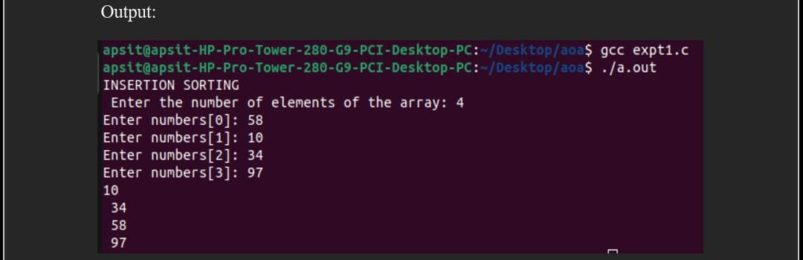

Aim:- To implement Insertion sort and Selection sort.
Program:
#include<stdio.h>
// Function to perform Insertion Sort
void insertionSort(int arr[], int n) {
int i, key, j;
for (i = 1; i < n; i++) {
key = arr[i];
j = i - 1;
while (j >= 0 && arr[j] > key) {
arr[j + 1] = arr[j];
j = j - 1;
}
arr[j + 1] = key;
}
}
// Function to perform Selection Sort
void selectionSort(int arr[], int n) {
int i, j, minIndex, temp;
for (i = 0; i < n - 1; i++) {
minIndex = i;
for (j = i + 1; j < n; j++) {
if (arr[j] < arr[minIndex])
minIndex = j;
}
temp = arr[minIndex];
arr[minIndex] = arr[i];
arr[i] = temp;
}
}
int main() {
int numbers[100], n, i;
// Input size of the array
printf("Enter the number of elements of the array: ");
scanf("%d", &n);
// Input elements of the array
for(i = 0; i < n; i++) {
printf("Enter numbers[%d]: ", i);
scanf("%d", &numbers[i]);
}
// Sorting using Insertion Sort
printf("\nINSERTION SORT\n");
insertionSort(numbers, n);
// Printing the sorted array
printf("Sorted array using Insertion Sort: ");
for(i = 0; i < n; i++) {
printf("%d ", numbers[i]);
}
printf("\n");
// Sorting using Selection Sort
printf("\nSELECTION SORT\n");
selectionSort(numbers, n);
// Printing the sorted array
printf("Sorted array using Selection Sort: ");
for(i = 0; i < n; i++) {
printf("%d ", numbers[i]);
}
printf("\n");
return 0;
}
┌───────────────────────────────────────────────────┐
│ Insertion Sort Algorithm: │
│ │
│ 1. For each element starting from the second │
│ element to the last: │
│ - Set the current element as the key. │
│ - Initialize a pointer to the element just │
│ before the current element. │
│ - While the pointer is greater than or equal │
│ to zero and the element at the pointer is │
│ greater than the key: │
│ - Move the element at the pointer one │
│ position to the right. │
│ - Decrement the pointer. │
│ - Insert the key at the position obtained by │
│ the last pointer position plus one. │
├───────────────────────────────────────────────────┤
│ Selection Sort Algorithm: │
│ │
│ 1. For each element starting from the first │
│ element to the second-to-last element: │
│ - Set the current element as the minimum. │
│ - For each element from the next element to │
│ the last: │
│ - If the current element is less than │
│ the minimum, update the minimum to │
│ the current element. │
│ - Swap the current element with the minimum │
│ found. │
└───────────────────────────────────────────────────┘
